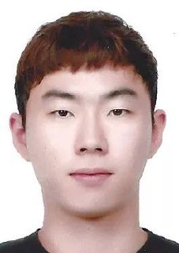

Ilsun Yun
Postdoctoral Researcher, Biomedical Engineering, UNIST
Computational Genomics · Multi-omics Machine Learning · Cancer
Genomics
nakkulla@gmail.com · Ulsan, Republic of Korea
ORCID:
0009-0006-5098-867X · github.com/nakkulla
Research Profile
Computational genomics researcher developing machine-learning and multi-omics analysis frameworks for clinical cancer cohorts. The doctoral research (Ph.D., UNIST, 2026) addressed three recurring barriers to clinical translation: cross-platform model transfer, population-aware variant interpretation, and somatic inference under scarcity of matched normal samples. The work spans four cancer-genomics manuscripts as first or co-first author across colorectal cancer, pediatric choroid plexus tumors, prostate cancer, and pancreatobiliary microbiome — one peer-reviewed publication, two manuscripts under revision, and one in preparation. External validation across public cohorts and Korean tertiary-hospital collaborations is emphasized. Postdoctoral research aims to extend this externally validatable framework beyond cancer to broader genomics and multi-omics domains.
Research Interests
Computational genomics; multi-omics machine learning; clinical cancer cohorts; population-aware variant interpretation; survival-linked microbiome analysis.
Positions
Postdoctoral Researcher, Department of Biomedical
Engineering · UNIST, Republic of Korea · September 2026 –
present
PI: Prof. Semin Lee
Education
Ph.D., Biomedical Engineering · Ulsan National
Institute of Science and Technology (UNIST), Republic of Korea · August
2026
Advisor: Prof. Semin Lee (Department of Biomedical Engineering / College
of Information and Bio Convergence)
Dissertation: Machine learning for multi-omics cancer
stratification: Applications to pancreaticobiliary microbiome analysis,
colorectal cancer subtyping, and pediatric tumor genomics
B.S., Life Sciences and Computer Science & Engineering · UNIST, 2020 (GPA 3.78/4.3)
Visiting Exchange Student · McGill University, Montréal, Canada · January–August 2019
Publications
† denotes equal first-author contribution.
Peer-reviewed
- Choi YS†, Choi SA†, Koh EJ†, Yun I†, et al. “Comprehensive multiomics analysis reveals distinct differences between pediatric choroid plexus papilloma and carcinoma.” Acta Neuropathologica Communications 12, 93 (2024). DOI: 10.1186/s40478-024-01814-y.
Under revision
- Yun I, Lee SM, Lee KY. “Clinical Implications of Platelet-derived Growth Factor Receptor A & B in Colorectal Cancer and Developing a Predictive Model for Consensus Molecular Subtype 4: A Multi-Cohort Observational Study with External Validation.” Medicine. Under revision.
- Kang B†, Yun I†, Lee S, Ha H. “Clinical Implications of the SChLAP1:UBE2E3 Gene Fusion According to Disease Stage in Patients with Prostate Cancer.” The World Journal of Men’s Health. Under revision.
In preparation
- Yun I†, Kim H†, Lee S, Park J. “Comparative Analysis of Bile and Fecal Microbiome in Pancreatic and Biliary Cancer Patients” (working title). Manuscript in preparation.
Research Experience
Ph.D. Research, UNIST · March 2020 – August 2026
Advisor: Prof. Semin Lee
CMS4 colorectal cancer classifier (Medicine, under revision)
- Developed a CMS4 Random Forest classifier and validated it across TCGA (n=512), CRCSC (n=796), four GEO cohorts (n=515), and an in-house RT-qPCR cohort from Uijeongbu St. Mary’s Hospital (n=109).
- Addressed RNA-seq → microarray → RT-qPCR platform shift via cross-platform normalization and hyperparameter tuning, achieving AUC 0.87–0.88 across the four external GEO cohorts.
- Identified PDGFRB as a stromal-independent CMS4 signal using ESTIMATE residualization (Cohen’s d=0.44 in the high-stromal stratum) and random-effects meta-analysis across four GEO cohorts.
Pediatric choroid plexus tumor multi-omics (Acta Neuropathologica Communications, 2024)
- Co-first author on a multi-omics characterization integrating WGS, transcriptomic, and clinical data of pediatric choroid plexus tumors.
- Led somatic-variant analysis under scarcity of matched normal samples by combining ensemble-based variant triage, VAF-neighborhood features, ClinVar annotation, Korea1K / gnomAD / 1000G filtering, and cross-species conservation evidence; prioritized TP53 alterations in 9 of 11 CPC cases.
- Performed WGS-based clonality analysis using FastClone, identifying multiclonal architecture in 5 of 8 carcinoma cases versus single-clone CPP/aCPP (Wilcoxon p=0.019).
Korean prostate cancer genomics (The World Journal of Men’s Health, under revision)
- Co-first author on an integrated WGS / WES / WTS study of SChLAP1:UBE2E3 fusion in Korean prostate cancer (n=114).
- Compared fusion prevalence between Korean cases (12.5–15.5%) and TCGA European-ancestry cases (3.2%), followed by orthogonal RNA in-situ hybridization validation; presented as a poster at the ASHG 2025 Annual Meeting (Boston, MA).
- Conducted stage-stratified survival analysis: biochemical recurrence in localized disease (HR=2.84) and overall survival in advanced disease (HR=2.86); integrated risk model AUC=0.85.
Bile–stool microbiome discovery (ASHG 2026 poster; manuscript in preparation)
- Designed a bile–stool microbiome analysis framework across pancreatic and biliary cancer subsets (QIIME2, DADA2, SILVA, PICRUSt2, DESeq2, ANCOMBC).
- Selected bile microbiome clusters with a survival-blind consensus PAC rule (1,000 × 80% resampling), then assessed cluster stability separately from prognostic reproducibility using bootstrap ARI, leave-one-out reassignment, and permutation testing.
- Identified a bile microbiome cluster associated with poorer overall survival in pancreatobiliary cancer (n=77; HR=4.04) and in the biliary tract cancer subset (n=57; HR=5.27), persisting after age and stage adjustment; a single-cohort association without external validation.
Multi-institutional collaboration
- Served as computational analysis lead across four Korean tertiary hospitals (Uijeongbu St. Mary’s, Samsung Medical Center, Pusan National University Hospital, Seoul National University Children’s Hospital), coordinating bioinformatics workflows for parallel pediatric brain, prostate, colorectal, and pancreatobiliary cancer manuscripts.
Machine Learning Research Intern, Data4Good · January – August 2019
McGill University / Université de Montréal · Supervisor: Prof. Janosch Ortmann (Université de Montréal)
- Built a predictive model for housing-support allocation for domestic-violence survivors; first applied-ML experience outside cancer genomics, in a decision-support context.
Technical Skills
Computational genomics
- Somatic variant calling, fusion detection, CNV analysis, clonality analysis, population-aware variant filtering.
- Tools: GATK Mutect2, BWA-MEM, SAMtools, STAR, RSEM, STAR-Fusion, Ensembl-VEP, FastClone, GISTIC2.0, CNVkit.
Clinical machine learning & statistics
- Cross-platform classifier development and validation across RNA-seq, microarray, and RT-qPCR cohorts; class-imbalance-aware evaluation; survival analysis and meta-analysis.
- Tools: Python (scikit-learn, AutoGluon, SHAP, lifelines, statsmodels), R (DESeq2, survival).
Microbiome
- 16S amplicon processing, differential abundance, β-diversity, functional inference, survival-linked clustering.
- Tools: QIIME2 v2024.10, DADA2, SILVA 138, PICRUSt2 v2.5, DESeq2, ANCOMBC, LEfSe, PERMANOVA.
Reproducible research
- Workflow automation, Git-based version control, reproducible analysis documentation, code-review practice; AI-assisted workflow tooling for analysis pipelines.
Selected Conference Presentations
- Yun I, Kim H, Jang DK, Park JK, Lee S. “Biliary microbiome stratifies pancreaticobiliary cancer prognosis via unsupervised clustering and machine learning.” Poster 1006T, American Society of Human Genetics (ASHG) Annual Meeting, Montréal, QC, Canada, 2026.
- Yun I, Kang BJ, Lee S, Kim KH, Ha HK. “SChLAP1:UBE2E3 Gene Fusion: A Novel Prognostic Biomarker in Korean Prostate Cancer.” Poster, American Society of Human Genetics (ASHG) Annual Meeting, Boston, MA, USA, 2025.
Fellowships & Awards
- Kyungdong Scholarship (USD 8,000), Kyungdong Foundation, 2019. Competitive private foundation scholarship supporting the McGill University exchange.
Mentoring, Teaching & Service
- Bioinformatics onboarding lead, Prof. Semin Lee Lab, UNIST (2020 – present). Led training for junior Ph.D. students and visiting wet-lab researchers in somatic variant calling, fusion detection, and microbiome analysis workflows; maintained internal documentation for reproducible GATK Mutect2, STAR-Fusion, and QIIME2 pipelines.
- Mathematics tutor, Samsung Dream Class education outreach program (2013 – 2015). Two academic years of one-on-one tutoring for low-income middle-school students.